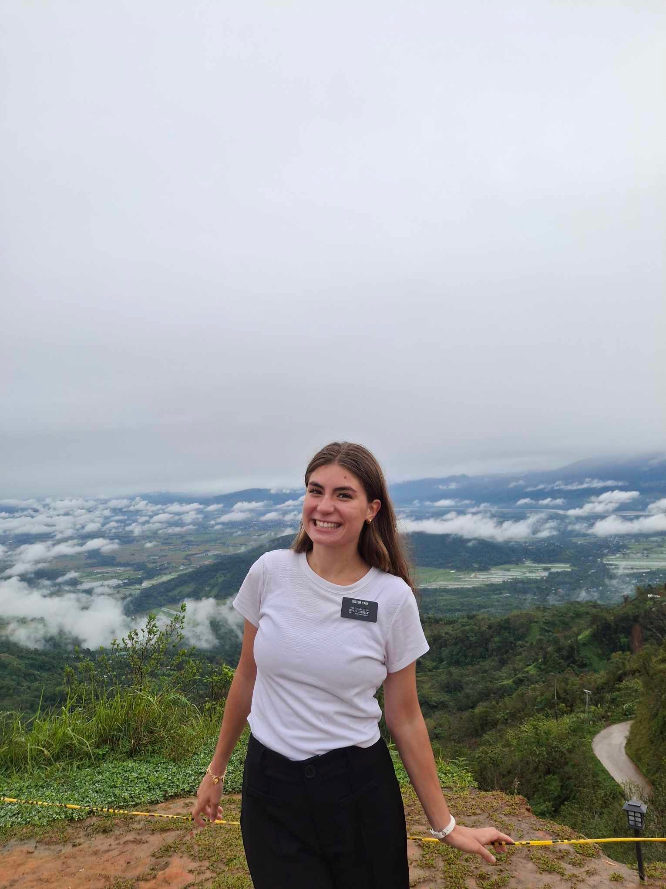
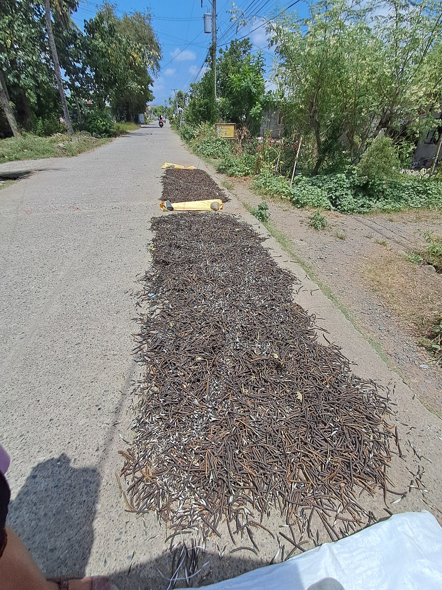
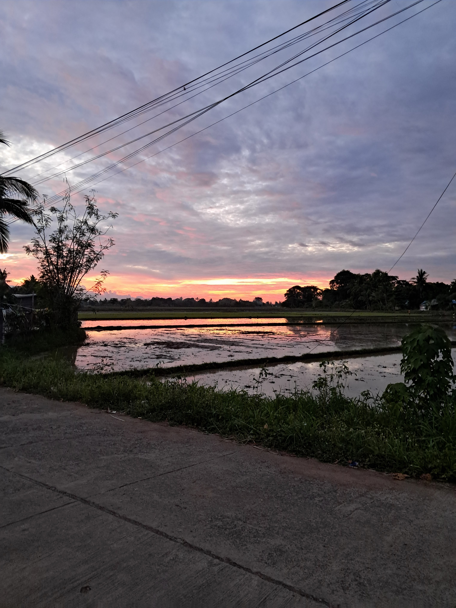
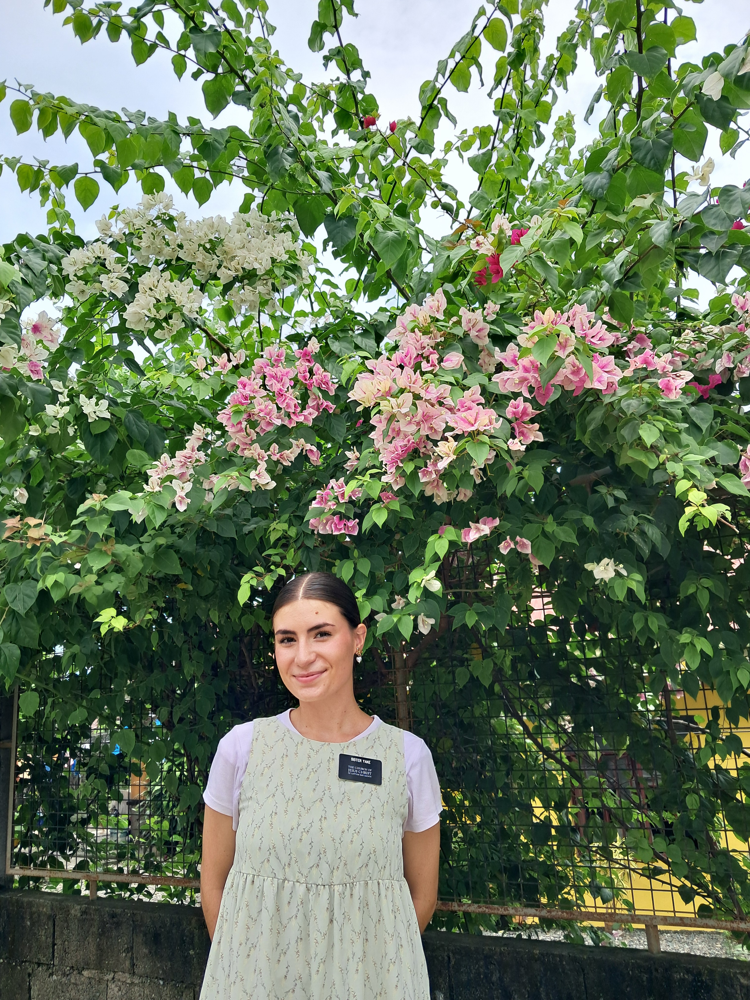
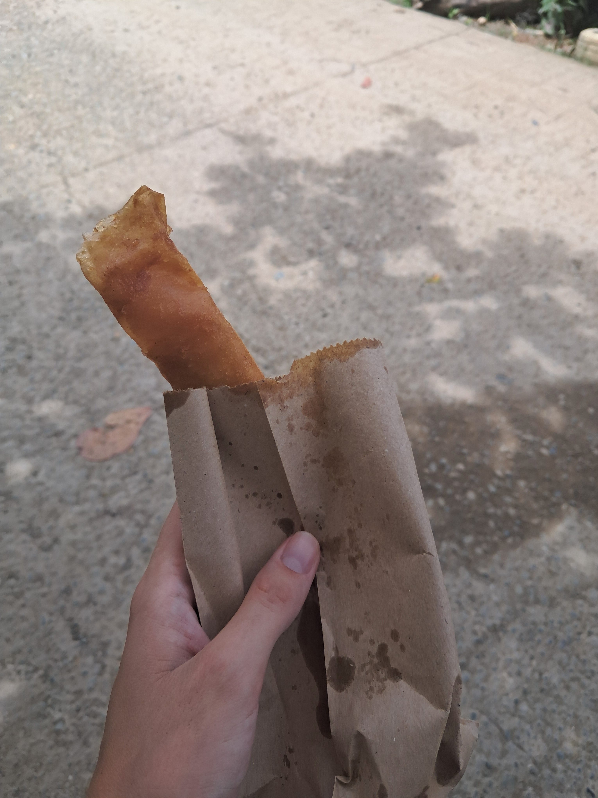

From May of 2024 to October 2025, I was blessed with the opportunity to serve a full-time mission in the Philippines, Cauayan Mission. My mission gave me an opportunity to testify of Jesus Christ, share His gospel, and teach and serve the people of the Nueva Vizcaya and Isabela Provinces in Central Luzon.
I served in four teaching areas during my mission: Bayombong, San Mateo, Alicia, and Cauayan City.
My first area, Bayombong, was the capital city of Nueva Vizcaya Province. Nestled in the Sierra Madre mountains, Bayombong was an incredible introduction to the natural beauty of the Philippines and culture of the Ilokano people. In Bayombong, I learned to embrace Filipino culture and love the people who I served. I also learned how to speak the Tagalog language in my 7 months of serving there.

My second area, San Mateo, was a rural community known for its monggo bean harvests. It was in San Mateo that I endured the most extreme weather, with the temperature reaching about 120 degrees fahrenheit in March through June. In San Mateo, I learned to trust in the Lord and in His strengthening and enabling power as I battled the heat, humidity, and lots of rejection.

My third area, Barangay Dagupan, Alicia, was a small farming community filled with rice fields, cows, and pretty sunsets. I loved the members and people who we were privileged to serve because they were so welcoming, loving, and Christlike despite their humble circumstances. In Alicia, I learned how much God loves His children because I felt His love for the people I taught there every day.

My fourth and final area, Cauayan City, was the main city in my mission. Far from the mountains of Bayombong and the rural community feel of San Mateo and Alicia, my companion and I tried to keep up with the hustle and bustle of our area. In Cauayan, I learned the importance of ministering and working with members. I was blessed to see many miracles come from ministering to the one throughout my time in the city.

Filipino Culture
One of the things I loved the most about the Philippines was its unique and beautiful culture!
We used the word "po" and greeted our elders with a "mano po" to signify respect.
We called our elders "nanay" and "tatay," which literally translate to "mom" and "dad." This shows how everyone in the Philippines views one another as family.
We rode in public transportations such as jeepneys and tricycles. Jeepneys are recycled US Army jeeps that are used as buses to travel mid-range distances. Tricycles are motorcycles with side cars that can take you to exactly where you need to go.
For our Christmas Conference, we performed traditional Filipino dances such as tinikling and carinosa.
Discover the Philippines
Here is a short video showcasing the natural beauty and culture of the Philippines!
Filipino Cuisine
My Favorite Local Dishes
Pinakbet: An Ilokano dish with a medley of vegetables and bagoong isda, aka fermented fish paste
Ginataang Gulay: A dish with pumpkin or squash, green beans, and coconut milk
Adobong Manok: Chicken adobo with chicken, soy sauce, and vinegar
Sinigang: A tart soup made with fish or pork and a medley of vegetables
My Favorite Meriendas/Snacks
Turon: a fried banana coated in brown sugar in a wrapper

Street Barbeque
Fudgee Bars
Dewberry Cookies - Blueberry Cheesecake Flavor
Pillows - Chocolate Flavor
My Favorite Filipino Fast Food
Jollibee spicy fried chicken and a coke float
Franks 2-for-1 hamburgers
Jr.Inasal Chicken Skewers with unli-rice
Data Analysis
The Philippines has a population of roughly 117.7 million people!
Despite the country's small size, it is the 14th most populous in the world!
Below is a live heatmap distribution of the population in the Philippines from Tableau Public.